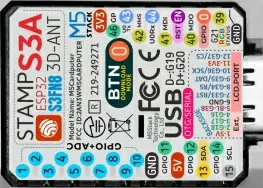

☰
Display
Full refresh
Save PNG
Swap R/B
Invert
Auto-zoom in landscape
Keyboard
Capture my keyboard
Test all 56 keys
Stream
fps
0
tiles/s
0
KiB/s
0
tiles
0
self-test
—
keys sent
0
keys dropped
0
coverage
0/56
ADV Mirror
240×135 RGB565
GNSS
LoRa
M5

zoom
connecting…
2×
3×
4×
5×
Gentle (2ms)
Normal (4.5ms)
Fast (9ms)
Aggressive (20ms)
⌨ capturing keys
stop